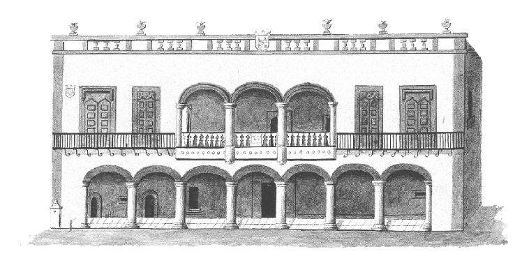
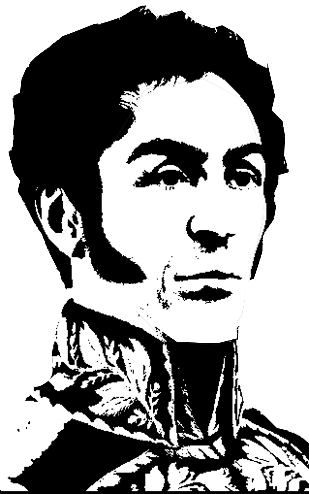
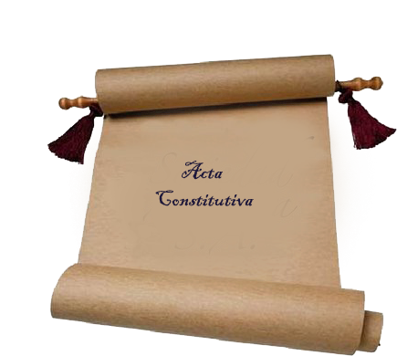
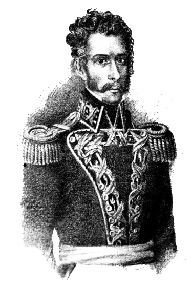
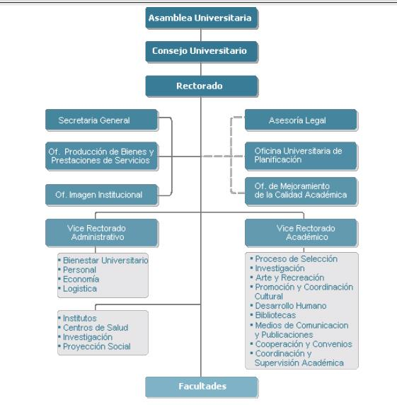

Usuario
Contraseña
Entrar
La Universidad Nacional de San Agustín es una institución dedicada a la formación integral de académicos y profesionales; con capacidad de investigar, crear y difundir conocimientos; para contribuir a la preservación del medio ambiente, al crecimiento y el desarrollo social, en condiciones de equidad, seguridad y justicia.
Reseña Historica
-
1719
En la primera etapa fueron los Padres Dominicos quienes, no después de arduas y constantes gestiones, lograron que el rey Felipe V concediera Licencia de Universidad Real y Pontificia "Intra Claustra" en el Convento de Santo Domingo, por cédula de 22 de enero de 1714, la que quedó inaugurada solemnemente en 1719 y que luego paralizó su vida por no poder el Convento sostenerla.
-
1765
Más tarde es la Comunidad Mercedaria que siempre anduvo rivalizando con los Dominicos y Jesuitas en propagar la instrucción, que en el Capítulo Provincial de la Orden, celebrado en esta ciudad en el mes de Julio de 1765, acordó la fundación de un Colegio Real y la Universidad Pontificia constituida según las normas de la célebre Universidad de Alcalá de Henares.
-

1821
Un hito fundamental lo constituyó la fundación de la Academia Lauretana el 10 de diciembre de 1821 en el templo de la Compañía, consagrada a la Santísima Virgen de Loreto y en la que se conjuncionaron las más brillantes personalidades del clero y la civilidad, comulgando con el común espíritu libertario de la Patria que emergía con ideas renovadas.
-

1825
La larga gestión de la institución universitaria, fue abonada por el Libertador Simón Bolívar, el que, a su paso por el sur del Perú hacia el Alto Perú, recogiendo el clamor de la ciudadanía, en su Cuartel General en la Ciudad de Puno, el 6 de agosto de 1825, por intermedio del Secretario General interino don Felipe Santiago de Estenós, hizo llegar al señor Prefecto de Arequipa, don Antonio Gutiérrez de la Fuente, una ordenanza para la constitución de los establecimientos de ciencias y artes, salubridad pública y demás, que contribuyan al adelantamiento y felicidad del Departamento.
-

1828
El verdadero propulsor de ambas instituciones fue el prefecto don Antonio Gutiérrez de la Fuente, con el apoyo y total auspicio de los miembros de la Academia Lauretana, tal como se conoce en un documento de la Secretaría de la Universidad del 12 de noviembre de 1830, reconociéndose el decisivo apoyo del Gran Mariscal Santa Cruz, quien como Presidente del Consejo de Gobierno, expidió los decretos más favorables al objeto, habiendo dispuesto la ocupación de los claustros de los Padres Agustinos como sede del colegio y la Universidad, le señaló al Cuerpo Docente y le dispensó los fondos indispensables.
-

1830
Es así como llegamos al 11 de noviembre de 1828 en el que en una memorable y solemne ceremonia, como queda registrada en la conceptuosa como emocionante Acta de su fundación, se declaró instalada la Universidad Nacional del Gran Padre San Agustín del Departamento de Arequipa. El acto fue realmente impresionante y el sólo leer el Acta de fundación, sobrecoge el espíritu de ver juntos tanta calidad humana y goce ciudadano, hasta llegar a las lágrimas por la creación de este "Templo del Saber", de esta casa de Estudios Superiores que tanto se hizo esperar.
Visión, Misión y Valores
Respeto
Adecua su conducta hacia el respeto de la Constitución y las Leyes, garantizando que en todas las fases del proceso de toma de decisiones o en el cumplimiento de los procedimientos administrativos, se respeten los derechos a la defensa y al debido procedimiento.
Probidad
Actúa con rectitud, honradez y honestidad, procurando satisfacer el interés general y desechando todo provecho o ventaja personal, obtenido por sí o por interpósita persona.
Eficiencia
Brinda calidad en cada una de las funciones a su cargo, procurando obtener una capacitación sólida y permanente.
Idoneidad
Entendida como aptitud técnica, legal y moral, es condición esencial para el acceso y ejercicio de la función pública. El servidor público debe propender a una formación sólida acorde a la realidad, capacitándose permanentemente para el debido cumplimiento de sus funciones.
Veracidad
Se expresa con autenticidad en las relaciones funcionales con todos los miembros de su institución y con la ciudadanía, y contribuye al esclarecimiento de los hechos.
Lealtad y Obediencia
Actúa con fidelidad y solidaridad hacia todos los miembros de su institución,cumpliendo las órdenes que le imparta el superior jerárquico competente, en la medida que reúnan las formalidades del caso y tengan por objeto la realización de actos de servicio que se vinculen con las funciones a su cargo, salvo los supuestos de arbitrariedad o ilegalidad manifiestas, las que deberá poner en conocimiento del superior jerárquico de su institución.
Justicia y Equidad
Tiene permanente disposición para el cumplimiento de sus funciones, otorgando a cada uno lo que le es debido, actuando con equidad en sus relaciones con el Estado, con el administrado, con sus superiores, con sus subordinados y con la ciudadanía en general.
Lealtad al Estado de Derecho
El funcionario de confianza debe lealtad a la Constitución y al Estado de Derecho. Ocupar cargos de confianza en regímenes de facto, es causal de cese automático e inmediato de la función pública.
Autoridades
- Nacimiento:
16 de septiembre de 1948
- Estudios:
Educación Primaria: Escuela 969 de Yarabamba
- Educación Secundaria:
Colegio Nacional de Independencia Americana
- Educación Superior:
Universidad Nacional de San Agustín
- Grados y Títulos:
Bachiller en Ciencias de la Educación en la Universidad Nacional de San Agustín.
Profesor y Licenciado en Educación en la Universidad Nacional de San Agustín
Doctor en Educación por la Universidad Nacional de San Agustín - Experiencia Profesional:
Profesor de la Gran Unidad Escolar Mariano Melgar 1969-1986
Profesor de la Escuela Normal Superior de Varones San Juan Bautista de la Salle 1972-73
Profesor de la Universidad Nacional de San Agustín desde 1974 hasta la fecha. - Cargos Desempeñados:
Secretario General del Sindicato de Docentes de la UNSA
Regidor de la Municipalidad Provincial de Arequipa
Jefe del Departamento Académico de Educación binary options trading
Decano de la Facultad de Educación en 04 periodos
Director de la Unidad de Postgrado de la Facultad de Educación
Director de la Escuela de Postgrado de la Universidad Nacional de San Agustín
Vicerrector Académico de la Universidad Nacional de San Agustín. - Obras Publicadas:
Química Inorgánica (Texto de Educación Secundaria)
Química Orgánica (Texto de Educación Secundaria)
Métodos y Técnicas del Estudio Superior (Texto Universitario)
Educación para la Salud (Texto Universitario)
Orientación Educativa (Texto Universitario)
Evaluación Educativa (Texto Universitario) - Artículos, Folletos, Ensayos, etc.
- Nacimiento:
16 de octubre de 1952
- Estudios:
Estudios Primarios en el Instituto Experimental Nro. 5 del Cercado
Estudios Secundarios en el Colegio Nacional de Independencia Americana - Grados y Títulos:
Estudios Superiores de Ingeniero Agrónomo en la Universidad Nacional del Altiplano
Grado de Magister en Marketing en la Universidad Nacional de San Agustín
Grado de Doctor en Ingenieria de Producción aprobado por unanimidad - Cargos Desempeñados:
Director de la Escuela Profesional de Agronomía en dos periodos 1993-1995 / 1995-1997
Decano de la Facultad de Ciencias Biológicas y Agropecuarias 2008-2011
Jefe de la Oficina Universitaria de Producción de Bienes y Servicios UNSA 2004-2008
Jefe del Instituto del Deporte Universitario 2010-2012
Coordinador Académico del Ceprunsa 2012-2014
Presidente de Comisiones Temporales y Permanentes de la UNSA - Investigaciones Realizadas:
Ganador del Concurso Nacional con el Proyecto 248-2008 del CONCYTEC
Ganador del Concurso Nacional con el Proyecto 277-2009 del CONCYTEC
- Nacimiento:
08 de Abril de 1954
- Estudios:
Educación Primaria en diversos colegios del país
Educación Secundaria en el Colegio Salesianos Don Bosco de Arequipa - Grados y Títulos:
Ingeniero Industrial en la UNSA 1984
Magister en Ingenieria de Producción en Area de Inteligencia Artificial en la Universidad Federal de Santa
Catarina de Brasil 1955.
Doctor en Ingenieria de Producción por la Universidad Federal de Santa Catarina de Brasil 1999 - Cargos Desempeñados:
Jefe de la Unidad de Procesamiento de Datos de INFOUNSA en 1980
Decano de la Facultad de Ingenieria de Producción y Servicios de la UNSA en dos Periodos
Director de la Unidad de Postgrado de la Facultad de Ing. De Producción y Servicios - Otros Cargos Desempeñados:
Investigador Principal de la Cátedra CONCYTEC en TIC’s para el desarrollo de Software Adjudicada a la UNSA por concurso público
Jefe de Sistemas y Consultor de empresas privadas y públicas de Arequipa y Lima
Investigador de diversos Proyectos financiados por FINCYT, FIDECOM Y FONDECYT con Un registro de Propiedad Intelectual obtenido y tres solicitudes de patentes
Ponente de eventos académicos y científicos en Brasil, Argentina, Chile, Bolivia, Perú, Ecuador y autor de 100 artículos de investigación científica en revistas indexadas
Autor de libros diversos en el área de Informática
Organigrama
Organos de Gobierno
La Asamblea Universitaria
La Asamblea Universitaria es el máximo organismo de gobierno de la Universidad y representa a toda la
comunidad universitaria. Será convocada por el Rector o por quien haga sus veces.
La Asamblea Universitaria estará constituida por:
- El Rector
- Los Vice-Rectores
- Los Decanos
- El Director de la Escuela de Post-Grado
- Los representantes de los profesores de las Facultades, en un número igual al doble de las autoridades señaladas en los incios anteriores.
- Los representantes de los graduados en el número de cuatro
- Los representantes de los estudiantes en la proporción del tercio del total de los miembros de la Asamblea.
El Consejo Universitario
El Consejo Universitario es el órgano de gobierno que norma y da cumplimiento a las disposiciones de la
Asamblea Universitaria y que, además, planifica ,organiza, evalúa, ejecuta y controla todas las actividades,
tanto académicas como administrativas de la Universidad.
El Consejo Universitario estará integrado por:
- El Rector
- Los Vice-Rectores
- Los Decanos
- El Director de la Escuela de Post-Grado
- Los representantes de los estudiantes en la proporción del tercio del total de los miembros del Consejo que serán elegidos en forma prescrita por el Art.72 del Estatuto Por un representante de los graduados
El Consejo de Facultad
El Consejo de Facultad es el máximo organismo de la Facultad, tiene funciones de coordinación, decisión, ejecución, supervisión y evaluación de las mismas. Esta constituida por:
- El Decano
- Los representantes de los profesores
- Los representantes estudiantiles en la proporción del tercio del total de miembros del Consejo
- Un representante de los graduados en calidad de supernumerarias.
Organos de Control
Oficina de Control Institucional
Organos de Asesoramiento
Comisiones permanentes y especiales de asesoramiento y apoyo al Consejo Universitario y Rectorado son:
- Asesoría Legal
- Oficina Universitaria de Planificación.
Organos de Apoyo
- Rectorado
- Secretaría General
- Instituto de Informática
- Oficina de Relaciones Públicas
- Vice-Rectorado Académico:
- Oficina de Medios de Comunicación y Publicaciones
- Oficina de Proceso de Selección
- Oficina de Arte, Recreación y Deportes
- Oficina de Coordinación y Supervisión Académica
- Oficina de Investigación Universitaria
- Oficina de Proyección Social y Extensión Cultural
- Dirección General de Biblioteca
- Centros Académicos e Institutos
- Vice-Rectorado Administrativo:
- Oficina de Personal
- Oficina de Economía
- Oficina de Logística
- Oficina de Bienestar Universitario.
Organos de Linea
- Las Facultades
- La Escuela de Post Grado
- Los Institutos de Investigación
- Los Centros de Producción de Bienes y/o servicios
- Los Centros de Proyección Social y Extensión Cultural
- Organos Autónomos
- Comisión Electoral
Referencia al Gobierno
Participan con voz y voto los delegados estudiantiles elegidos por sus bases en la proporción de un tercio en la Asamblea Universitaria, Consejo Universitario y Consejo de Facultades; lo que da una característica especial a los Organos de Gobierno Universitario. Por la experiencia de los últimos años con la actual Ley Universitaria, la participación estudiantil es muy saludable y las delegaciones han demostrado una gran madurez y alta responsabilidad.